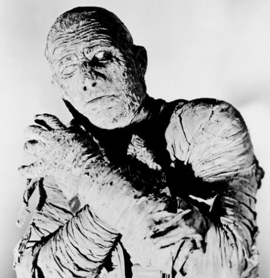
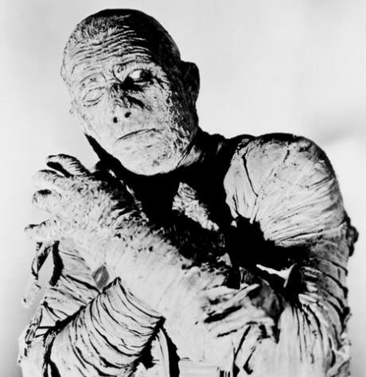

>
UNIVERSAL HORROR MOVIE MONSTERS
HOME ◉
Passion V2 ◉
RYAN'S HOMEPAGE ◉
 

The Mummy
The Mummy was orginially made in 1932 as a supernatural horror film directed by Karl Freund. It was released by Universal Studios along with other Universal Classic Monsters franchise and involved the famous, Boris Karloff.
Just like other Universal classic monsters, many sequels were made though the best one in my opinion is the 1999 one with Brendan Fraser.